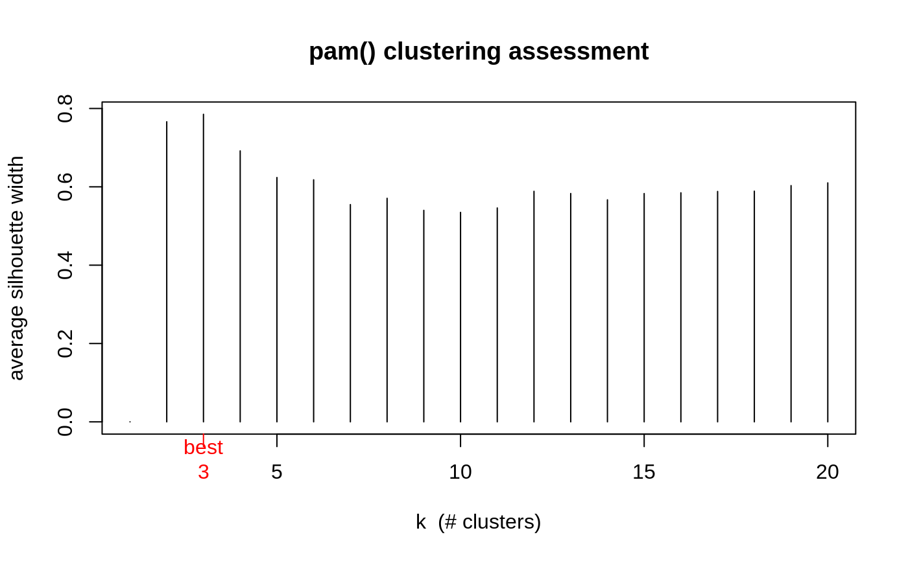

pam.object.RdThe objects of class "pam" represent a partitioning of a
dataset into clusters.
These objects are returned from pam.
The "pam" class has methods for the following generic functions:
print, summary.
The class "pam" inherits from "partition".
Therefore, the generic functions plot and clusplot can
be used on a pam object.
A legitimate pam object is a list with the following components:
the medoids or representative objects of the
clusters. If a dissimilarity matrix was given as input to
pam, then a vector of numbers or labels of observations is
given, else medoids is a matrix with in each
row the coordinates of one medoid.
integer vector of indices giving the medoid observation numbers.
the clustering vector, see partition.object.
the objective function after the first and second
step of the pam algorithm.
vector with length equal to the number of clusters, specifying which
clusters are isolated clusters (L- or L*-clusters) and which clusters are
not isolated.
A cluster is an L*-cluster iff its diameter is smaller than its
separation. A cluster is an L-cluster iff for each observation i
the maximal dissimilarity between i and any other observation of the
cluster is smaller than the minimal dissimilarity between i and any
observation of another cluster. Clearly each L*-cluster is also an
L-cluster.
matrix, each row gives numerical information for one cluster. These are the cardinality of the cluster (number of observations), the maximal and average dissimilarity between the observations in the cluster and the cluster's medoid, the diameter of the cluster (maximal dissimilarity between two observations of the cluster), and the separation of the cluster (minimal dissimilarity between an observation of the cluster and an observation of another cluster).
list with silhouette width information, see
partition.object.
dissimilarity (maybe NULL), see partition.object.
generating call, see partition.object.
(possibibly standardized) see partition.object.
## Use the silhouette widths for assessing the best number of clusters, ## following a one-dimensional example from Christian Hennig : ## x <- c(rnorm(50), rnorm(50,mean=5), rnorm(30,mean=15)) asw <- numeric(20) ## Note that "k=1" won't work! for (k in 2:20) asw[k] <- pam(x, k) $ silinfo $ avg.width k.best <- which.max(asw) cat("silhouette-optimal number of clusters:", k.best, "\n")#> silhouette-optimal number of clusters: 3plot(1:20, asw, type= "h", main = "pam() clustering assessment", xlab= "k (# clusters)", ylab = "average silhouette width")